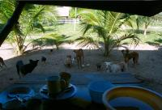
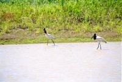
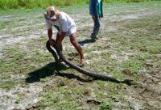
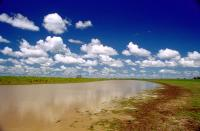
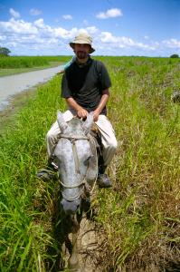
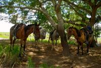
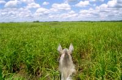

|
Mercredi 24 octobre
A 6H00, on entend les poules et les cochons qui démarrent leur journée, puis
le seau du puits que quelqu'un remonte et qui résonne sur les parois de pierre.
Toilette au puits, petit déj de roi en famille. Chiens, cochons, chats, poules,
attendent derrière la fenêtre qu'on leur envoie des trucs. Les poules s'invitent
même à table... Ensuite petite lecon de botanique où on découvre plusieurs plantes
médicinales avant de partir.
Et puis, en selle! Lionel est un peu intimidé au début mais ne le reste pas
lontemps. Très fier, il me montre que c'est lui qui dirige son cheval et non
le contraire. Arrêts, démarrages, zigzags, accérations, je crois que les manègeas
des fêtes foraines lui manquent. L'air de rien, il me double sans pouvoir réprimer
un sourire de fierté. Ca saute bien un peu mais il se trouver très confortablement
installé. Tant mieux, on est parti pour quatre heures. On traverse la pampa
et ses herbes hautes jusqu'à la tête de nos chevaux, on croise des bovins, des
cow-boys, plein de beaux oiseaux et... on trouve un anaconda dans un cours d'eau!
Madrigo le tire doucement par la queue hors de l'eau brune afin qu'on puisse
l'admirer. Trois mètres de long, un bon diamètre, il est paisible. Il paraît
qu'ils hypnotisent leur proie puis les étouffent en les serrant et les mangent
ensuite. Jusqu'à 15 jours pour gober une vache et au moins un mois pour la digérer,
c'est-à-dire faire la sieste. Mais je suppose que les vaches sont réservées
aux plus gros anacondas. Paraît qu'ils peuvent mesurer jusqu'à 15 mètres pour
3 mètres de diamètre!?
Le notre nous suffit, on le regarde, quelques photos et il retourne tranquillement
à l'eau. Il est plus que déconseillé de le mettre sur son cou pour la photo
car les crèmes anti moustiques et solaires qu'on utilise sont très mauvaises
pour la leur de peau. Alors on ne l'embête pas plus longtemps. A 13H00, on quitte
nos chevauix, on n'a même pas mal aux fesses, et on monte dans la pirogue. Assis
sur les planches en bois, ca par contre ca fait mal aux fesses. Cinq minutes
plus tard, on rejoint les autres en plein déjeuner au campement et on découvre
immédiatement que l'un des anglais est un gros porc qui pète et qui rote si
fort qu'on ne peut même pas faire semblant de ne pas l'avoir entendu. A table,
en pirogue, en marchant, en nageant, en voiture, tout le temps. Puis on fasit
trempette dans les eaux brunes infestées de piranhas et d'aligators! Et puis,
la sieste!
On a changé de guide, le nouveau s'appelle Mateo. On part avec lui en pirogue
sur le Rio Serpent. En tout cas c'est comme ca qu'il est nommé à cause de son
tracé serpentueux. Et là, c'est le festival. On découvre un nombre incroyable
de variétés d'oiseaux. Des hérons blancs, d'autres cendrés et aussi de hérons
tigres. Des vautours, des aigles de toutes sortes dont le serpentaire (à cause
de son régime alimentaire). Des toucans géants, d'autres de taille normale et
des petits avec un bec moins disproportionné et plus pâle mais avec un corps
splendide de couleurs. De temps en temps, une flèche verte ou bleue nous passe
sous le nez. Ce sont des martin-pêcheurs qui donnent bien du soucis à Marion.
Depuis l'Inde elle essaie d'en photographier un, mais ils le font exprès. Ils
se posent à 15 mètres hors de portée et lorsqu'on s'approche, ils filent à la
dernière minute. Les cardinaux eux sont tout petits et ont la tête rouge. En
haut d'un arbre, un nid abrite les plus grans oiseaux volants d'amérique du
sud, ils ont le corps blanc, la tête noire et un "collier" rouge. Des oiseaux
préhistoriques avec une drôle de crête sur la tête se planquent dans les arbres
et font un de ces boucans! Et puis des ibis, et puis plein d'autres encore.
On voit alors notre premier aligator. Planqué dans l'herbe au bord de l'eau,
il est là, immobile...
Sur les troncs dans l'eau, il y a des tortues. Des centaines en tout. Elles
se regroupent à trois ou quatre, à la queueleuleu, pour faire bronzette. Des
minuscules de moins de 10 cm et des plus grosses d'une quarantaine de cm.
Plus surprenent encore, le capibara, le plus grand rongeur du monde. Il a une
tête de marmotte, mais alors une grosse marmotte, grande comme un cochon. D'ailleurs
en anglais, on les apelle les water-pigs, sont forts ces anglais!
Et puis, arrêt baignade au milieu... des dauphins! Promis juré, c'est vrai.
Des dauphine d'eau douce qui remontent en surface et font des sauts à 5 ou 10
mètres de notre pirogue. Et certains de ces dauphins sont... roses. Promis,
on n'a rien fumé, c'est rien que la vérité vraie, aussi roses que les fesse
d'un bébé. Après la baignade, à une vingtaine de mètres de là, on prend de chouettes
photos de la tête... d'un aligator! Mais bon, il paraît qu'ils ne sont pas dangereux
pour l'homme alors tout va bien. Ce qu'il vaut mieux éviter, ce sont les caïmans
qui sont agressifs. Il y en a aussi dans ces eaux, mais ils sont plus rares.
De toute facon, on ne sait pas faire la différence, alors! N'empêche que, aligators
ou caïmans, ces bestioles là font bien 3 mètres et c'est bien impressionnant.
A la nuit tombée, rebelotte, on part en pirogue sur le cours d'eau. Et à la
lampe torche, on découvre des yeux brillants, comme ceux des chats éclairés
par les phares d'une voiture. Sauf qu'ici, on est en amazonie et que ce sont
ceux des aligators et des caimans. Il y en a des centaines! Partout! Paraît
que la journée ils restent au fond de l'eau. La même où on va se baigner! Mais
le campement où on dort, même s'il est bien fait, ne possède pas de douche.
La rivière et ses crocos est le seul moyen de se décrasser!!!
Jeudi 25 octobre
On passe la nuit dans motre grande cabane sur pilotis planqués sous les moustiquaires.
Malgré toute la lotion et les moustiquaires, on commence à être pas mal dévorés.
Mais il n'y a pas, paraît-il, de problème avec le paludisme ici. Mais ça gratte
quand même. On va se balader à pied dans la jungle. Même si la forêt ici n'est
pas gigantesque, on voit tout de même quelques arbres de taille fort respectables
où vivent des singes. Difficiles à voir, ils ont peur de nous et se planquent
tout en haut. Certains sont noirs et d'autres roux, c'est chouette. Et puis,
on voit notre deuxième anaconda et, avant, un serpent vert suspendu dans un
arbre au dessus de la rivière.
On repart en bateau, 3 heures pour rejoindre une jeep qui va nous ramener à
Rurre et durant lesquelles on voit de petits singes, des capucins, utilisés
(Marion me dit) pour aider les personnes paralysées. Puis, on admire les nénuphares
géants, les Reines Victoria, comme on les appelle. Jolis, grandes feuilles rondes
et plates aux bords relevés comme des assiettes. Ils sont immenses, bien 1 mètre
de large. Bref, le festival continue! Vraiment, on ne regrette pas cette petite
excursion du côté de Santa Rosa! Le soir, une douche, enfin, ça fait du bien!
Suite du voyage : Guaranamerin
|

Bolivie
Rurrenabaque
|

Bolivie
Rurrenabaque
|

Bolivie
Rurrenabaque
|

Bolivie
Rurrenabaque
|

Bolivie
Rurrenabaque
|

Bolivie
Rurrenabaque
|

Bolivie
Rurrenabaque
|
|
|